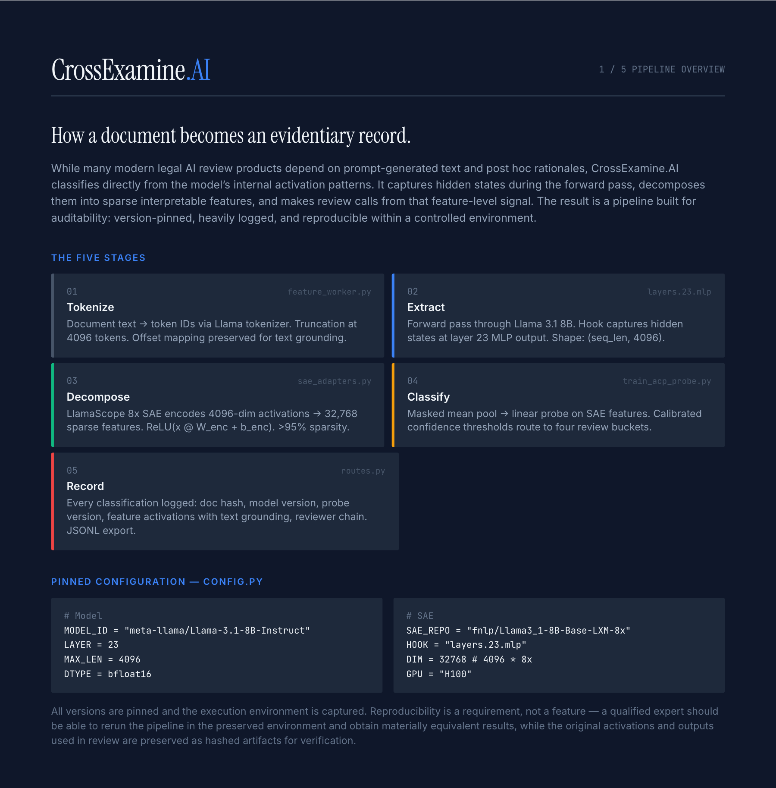
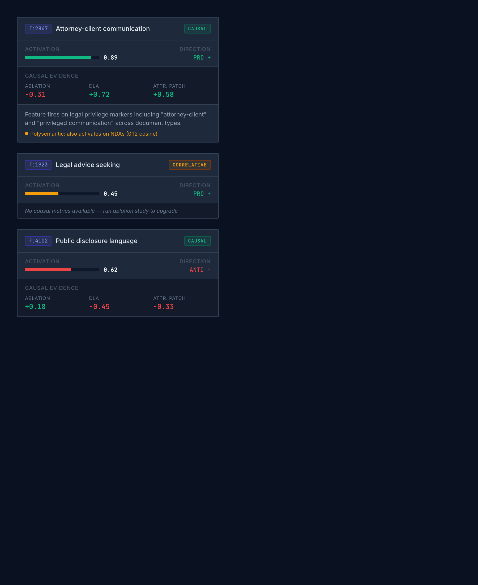
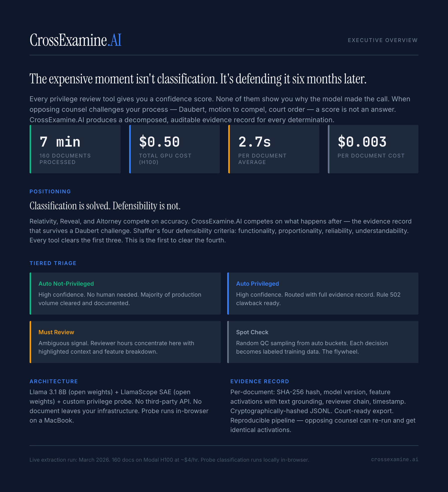

CrossExamine.AI Written for Sidecar Health — a production AI SaaS, solo-built in 9 weeks.
I built an end-to-end regulated-industry AI product — Python + TypeScript, full-stack, AI-native — by myself, with Claude Code in the loop every day. The domain happens to be legal privilege review, but the hard part isn't legal: it's defensibility. Every prediction has to come with auditable, causal evidence — the exact bar a cash-benefit claims decision or a member-facing coverage call has to clear. That's why I'm writing to Sidecar.
01The Problem
Privilege review is the worst workflow in discovery — and "just use an LLM" doesn't fix it.
- Black-box ML is a non-starter. A privilege flag without why gives a court nothing to rely on.
- Raw LLM prompting is worse. Hallucinated quotes, silent drift between matters, no audit trail — malpractice in production.
- Existing tools don't calibrate per-matter. Privilege context shifts dramatically between a patent case and a class action; one global threshold is wrong everywhere.
Same bar applies to a cash-benefit insurer: a dollar figure with no auditable trace is the failure mode that sinks trust with both members and regulators.
02System Architecture
Multi-tenant SaaS, batch-first ML, evidence-first API shape.
Key architectural decisions
| Decision | Why |
|---|---|
| Batch-first, not request-first. Classifications run as async jobs with a state-machine lifecycle (pending → extracting → scoring → reviewing → finalized). | A privilege review is 10K+ documents. Treating each classification as a synchronous REST call forces the client to manage retries, backoff, and partial failures. The state machine owns that. |
| GPU is a remote service, not a sidecar. Modal hosts the Llama-3.1-8B + SAE extraction behind an HTTP boundary. | Lets the API stay on commodity CPU infra, keeps GPU cost purely variable, and makes the extractor independently versionable. The HTTP boundary was chosen specifically so extraction moves to AWS (SageMaker async endpoints or EKS + GPU nodes) as a config change, not a rewrite — the right path once compliance + data-residency requirements kick in. |
Evidence is first-class, not a response field. /classifications/{id}/evidence is its own endpoint, and the DB stores ablation/contrastive results separately from the determination. |
Reviewers pull evidence lazily when they want to dig in. Auditors pull it weeks later. It shouldn't live only in a hot response. |
Multi-tenant isolation at the query level, not just the row. Every service takes org_id and matter_id; tests assert cross-tenant leakage is impossible on each endpoint. |
Legal (and healthcare) tenancy is non-negotiable. Relying on app logic alone is a JOIN-away from a breach. |
| HMAC-signed audit trail. Every review action is signed and chained; tampering breaks the chain. | Defensibility packages ship to court as signed bundles. Same primitive a regulated healthcare insurer needs for claim-adjudication audit. |
03The ML Pipeline
3-stage ensemble over sparse-autoencoder features on Llama-3.1-8B hidden states.
A deliberate ensemble — each stage has a different job and a different failure mode, so a mistake in one is caught by the next: Triage (cheap lexical + metadata filter) → Core (7-probe linear ensemble over SAE features, calibrated voting) → Review (Claude pass, quality-guard'd against hallucinated quotes).

Why sparse autoencoders?
A dense Llama hidden state classifies fine but is uninterpretable polysemantic soup — fatal for defensibility. An SAE decomposes it into a much larger, much sparser feature basis where individual features correspond to human-readable concepts ("cites outside counsel", "forwarded board memo"). A linear probe on SAE features is still linear — but its weights are legible. When it fires, you can point at three specific features and say these are why.
0.494 → 0.692. 3× better transfer
across matter types while cutting storage and serving cost. Highest-leverage change of the project.
Before fitting a single probe I rebuilt the training data — industry-standard privilege corpora had ~71% label error. Best ML work on a regulated problem is almost always dataset work.
04Interpretability & The Faithfulness Gate
"Explanations" that don't actually explain anything are worse than no explanation.
Most "explainable AI" in legal software is post-hoc rationalization — a second model writing a plausible story about the first model's output. Reads well, often unfaithful, leaves a reviewer worse off than no explanation. Every evidence claim in CrossExamine has to pass a three-part faithfulness gate before it ships to the UI:
| Check | What it tests | Failure mode caught |
|---|---|---|
| Ablation | Zero out the claimed SAE feature; re-run the probe. | "Evidence" that the model didn't actually rely on — confidence shouldn't move. |
| Contrastive probe | Compare activation on this document vs. paired non-privileged documents from the same matter. | Features that fire on everything in this matter — signal ≈ base rate. |
| Stability | Re-run under small input perturbations (paraphrase, re-chunk). | Features whose activation is an artifact of tokenization, not content. |
Features that pass the gate become latent evidence cards — the thing a lawyer actually sees: a snippet from the document, the human-readable label for the SAE feature, the activation strength, and the ablation delta. Evidence cards are versioned with the model and signed into the audit trail, so a reviewer six months later can reconstruct exactly what was in front of the system at decision time.

Stage-3 quality guard: every quote Claude emits is span-matched against the source document. Non-literal quotes fail the guard; the recommendation is rejected and retried. Makes the agent's output safe for a lawyer — or a court — without a separate verification step.
05Results & Engineering Quality
What shipped, how it performs, and how it's kept from breaking.

Model performance
| Metric | Value | Why it matters |
|---|---|---|
| Recall on privilege | 0.976 | The metric that matters — a missed privileged doc is the failure mode with real-world downside. |
| F1 | 0.940 | Balanced against over-redaction. |
| Cross-domain transfer F1 | 0.494 → 0.692 | After the 131K → 32K SAE migration. A new matter type now works out of the box with calibration, not retraining. |
Operational footprint (measured, not projected)
Last measured run: 160 documents, 7 minutes wall clock, $0.50 total GPU cost on Modal H100 (March 2026).
Feature extraction runs on Modal scale-to-zero H100s; the linear probe runs locally, which is why per-document cost is effectively just the GPU extraction cost.
Model config is pinned in config.py: Llama-3.1-8B-Instruct · Layer 23 MLP · 32,768-dim LlamaScope 8x SAE · 4K token context.
Ground-truth labels come from a tobacco-litigation corpus where a court actually adjudicated privilege — not a crowd-labeled benchmark.
Quality bar
rufflint
mypy --stricttypes
tsc --noEmitfrontend
pytest2,256 tests
Alembicmigration smoke harness
GitHub Actionspath-filtered CI
Sentryerrors
WorkOSSSO / SAML
HMACsigned audit trail
structured logsorg / matter / request
06How this gets built in 9 weeks, solo
The delta isn't heroic hours — it's AI-native dev workflow as the default.
"Habitual, fluent use of AI tools" (from the JD) is my default operating mode, not an add-on. Claude Code
drafts scaffolding, tests, schema migrations, type plumbing; I spend attention on the things that actually
require judgment — architectural choices, data quality, how the evidence cards should feel to a
reviewer. 82 endpoints, 2,256 tests, 9 weeks, solo, with mypy --strict gating —
that cadence is how quality holds while one person covers the surface area.
On the 5+ years of SWE tenure bullet: I'm close, not clearly past it. The case for me is the shipped work above — happy to walk through any of it on a call.
07Tradeoffs I'd revisit
The honest version — what I'd build differently at team scale.
- Modal over AWS, for now. Right call solo; at team scale + compliance, I'd move extraction to SageMaker async or EKS+GPU. The HTTP boundary makes that migration boring.
- Synthetic data as a crutch. Pragmatic fix for 71% label error. Human-labeled gold sets per matter type dominate long-term — but only once the business picks matter types.
- Probe ensemble vs. end-to-end fine-tune. A fine-tuned LLM would beat the ensemble on raw F1. I chose the ensemble because interpretability was the product — revisitable once SAEs on frontier models mature.
- Single-cluster Postgres. Fine at current scale; multi-region tenants would want per-tenant DBs for data residency. Service layer is already tenant-scoped, so it's mostly ops.